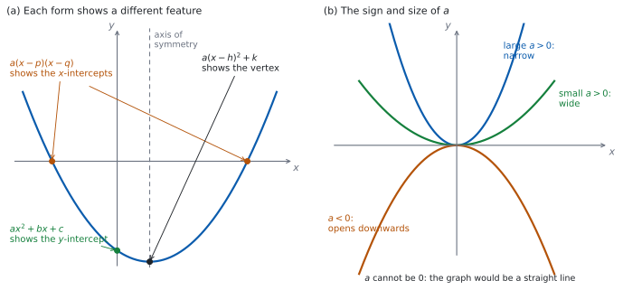

SL 2.6 — The quadratic function and its three forms（2 次関数の 3 つの形）
- quadratic function（\(2\) 次関数）の\(3\) つの形を見分けられる。
- \(f(x) = ax^{2}+bx+c\) から \(y\) 切片 \((0,c)\) と、対称の軸 \(x = -\dfrac{b}{2a}\) を読める。
- \(f(x) = a(x-p)(x-q)\) から \(x\) 切片 \((p,0)\)、\((q,0)\) を読める。
- \(f(x) = a(x-h)^{2}+k\) から 頂点 \((h,k)\) を読める。
- \(3\) つの形を行き来できる（展開・因数分解・平方完成）。
- \(a\) の符号と大きさが、グラフの形をどう決めるかを言える。
- 与えられた情報から、\(2\) 次関数の式を組み立てられる。
The idea
1. \(2\) 次関数には、\(3\) つの書き方がある
quadratic function（\(2\) 次関数）とは、\(x\) の \(2\) 乗までを使って書ける関数のことです。グラフは parabola（放物線）と呼ばれます。
同じ \(1\) つの放物線を、ちがう形に書き直せます。 どれも同じ関数ですが、すぐ読み取れる特徴がちがいます。
ただし、factorised form に書けるのは \(x\) 切片をもつ放物線だけです（第 3 節）。standard form と vertex form は、どの \(2\) 次関数でも必ず書けます。
| 形 | 英語名 | すぐ読めるもの |
|---|---|---|
| \(f(x) = ax^{2}+bx+c\) | standard form（一般形） | \(y\) 切片 \((0, c)\) |
| \(f(x) = a(x-p)(x-q)\) | factorised form（因数分解した形） | \(x\) 切片 \((p,0)\)、\((q,0)\) |
| \(f(x) = a(x-h)^{2}+k\) | vertex form（頂点形） | 頂点 \((h, k)\) |

図 1 の (a) が、そのようすです。どの形を選ぶかは、何が知りたいかで決めます。
2. standard form と、対称の軸
\[ f(x) = ax^{2} + bx + c, \qquad a \neq 0 \tag{1}\]
式 1 に \(x = 0\) を入れると \(f(0) = c\) なので、\(y\) 切片は \((0, c)\) です。\(c\) を見るだけで分かります。
対称の軸は、次の式で求められます。
\[ x = -\frac{b}{2a} \tag{2}\]
公式集の 2.6 の欄に Axis of symmetry of the graph of a quadratic function として印刷されています。
\(f(x) = ax^{2} + bx + c \Rightarrow\) axis of symmetry is \(x = -\dfrac{b}{2a}\)
覚える必要はありません。 ただし、\(b\) の符号を落とさないように気をつけてください。
軸が求まれば、その \(x\) を \(f\) に入れるだけで頂点の \(y\) 座標が出ます。
3. factorised form と \(x\) 切片
\[ f(x) = a(x-p)(x-q) \tag{3}\]
\(x = p\) でも \(x = q\) でも、かっこのどちらかが \(0\) になるので \(f(x) = 0\) です。ですから \(x\) 切片は \((p, 0)\) と \((q, 0)\) です。\(p\) と \(q\) が同じ数のときは、\(x\) 切片は \(1\) つだけで、そこが頂点になります。
すべての \(2\) 次関数が、この形に書けるわけではありません。 \(x\) 切片をもたない放物線（グラフが \(x\) 軸とまったく交わらないもの）は、実数の \(p\)、\(q\) では書けません。そのような例は、このあとの例題と演習で扱います。
対称の軸は、\(2\) つの \(x\) 切片のまん中です（SL 2.4）。
\[ x = \frac{p+q}{2} \tag{4}\]
4. vertex form と頂点
\[ f(x) = a(x-h)^{2} + k \tag{5}\]
\((x-h)^{2}\) は \(0\) 以上で、\(x = h\) のときだけ \(0\) になります。ですから
- \(a > 0\) なら、\(x = h\) でいちばん小さくなり、そのときの値は \(k\)。
- \(a < 0\) なら、\(x = h\) でいちばん大きくなり、そのときの値は \(k\)。
どちらの場合も、頂点は \((h, k)\)、対称の軸は \(x = h\) です。
式は \((x - h)^{2}\) です。\((x + 6)^{2} - 1\) と書いてあったら、\(h = -6\) で、頂点は \((-6, -1)\) です。
\((x+6)\) を見て \(h = 6\) としないでください。\(x\) 切片のときと同じで、引き算の形に直してから読むのが確実です。
5. \(3\) つの形を行き来する
| 行き先 | 使う操作 |
|---|---|
| vertex form → standard form | 展開する |
| factorised form → standard form | 展開する |
| standard form → factorised form | 因数分解する（\(x\) 切片をもつときだけ） |
| standard form → vertex form | completing the square（平方完成）をする |
| factorised form ↔︎ vertex form | いったん standard form を経由する |
平方完成を、\(g(x) = x^{2}+10x+3\) で見ます。
\(x^{2}+10x\) は、\((x+5)^{2} = x^{2}+10x+25\) の一部です。\(25\) が余分なので、引いておきます。
\[ x^{2}+10x+3 = \bigl(x^{2}+10x+25\bigr) - 25 + 3 = (x+5)^{2} - 22 \]
\(x\) の係数の半分（ここでは \(5\)）が、かっこの中の数になります。
\(3x^{2}+12x+5\) なら、まず \(x^{2}\) と \(x\) の項から \(3\) をくくり出します。
\[ 3\bigl(x^{2}+4x\bigr) + 5 = 3\bigl((x+2)^{2}-4\bigr) + 5 = 3(x+2)^{2} - 12 + 5 = 3(x+2)^{2} - 7 \]
かっこの外に出すとき、\(-4\) も \(3\) 倍されることを忘れないでください。
6. \(a\) の符号と大きさ
図 1 の (b) のとおりです。
| \(a\) | グラフ |
|---|---|
| \(a > 0\) | 下に凸（\(\cup\) の形）。頂点が最小 |
| \(a < 0\) | 上に凸（\(\cap\) の形）。頂点が最大 |
| \(\lvert a \rvert\) が大きい | 細い（急に立ち上がる） |
| \(\lvert a \rvert\) が小さい | 広い（ゆるやか） |
「細い」「広い」は、比べたときの言い方です。 図 1 の (b) のように、頂点をそろえて並べたとき、\(\lvert a \rvert\) が大きいほうが細くなります。\(y = x^{2}\) を目安にすると、\(\lvert a \rvert > 1\) なら細く、\(0 < \lvert a \rvert < 1\) なら広くなります。
vertex form \(a(x-h)^{2}+k\) で見れば、\(a\) は開き方だけを決め、頂点の位置は \(h\) と \(k\) が決めます。 ただし standard form で \(b\) と \(c\) をそのままにして \(a\) だけを変えると、軸 \(x = -\dfrac{b}{2a}\) も動くので、頂点の位置も変わります。「\(a\) は開き方だけ」と言えるのは、頂点をそろえて比べたときです。
7. 情報から式を組み立てる
与えられた情報に合う形を選ぶのが要です。
| 与えられたもの | 使う形 |
|---|---|
| 頂点と、もう \(1\) 点 | vertex form \(a(x-h)^{2}+k\) |
| \(x\) 切片 \(2\) つと、もう \(1\) 点 | factorised form \(a(x-p)(x-q)\) |
| \(3\) 点 | standard form（\(a\)、\(b\)、\(c\) の連立方程式になります。手で解くには重いので、Paper 1 ではあまり問われません） |
手順は、どれも同じです。分かっているものを先に入れて、残った \(a\) を「もう \(1\) 点」で決めます。
TI-Nspire の Graphs 画面に \(2\) 次関数を入れ、menu → Analyze Graph → Minimum（または Maximum）で頂点の座標が読み取れます。Zero で \(x\) 切片も出ます。
Calculator 画面に、Factor（因数分解）や Complete the Square（平方完成）はありません。因数分解も平方完成も、手でやることです。
Paper 1 では使えません。 このページの例題と演習は、すべて手で解ける形にしてあります。平方完成は、手でできるようにしておいてください。
Why it works
なぜ、対称の軸が \(x = -\dfrac{b}{2a}\) なのでしょうか。
standard form を、平方完成して vertex form に直してみます。まず \(a\) をくくり出します。
\[ ax^{2}+bx+c = a\left(x^{2} + \frac{b}{a}x\right) + c \]
かっこの中を平方完成します。\(x\) の係数の半分は \(\dfrac{b}{2a}\) です。展開してみると
\[ \left(x + \frac{b}{2a}\right)^{2} = x^{2} + \frac{b}{a}x + \frac{b^{2}}{4a^{2}} \]
なので、\(\dfrac{b^{2}}{4a^{2}}\) が余分です。引いておきます。
\[ x^{2} + \frac{b}{a}x = \left(x + \frac{b}{2a}\right)^{2} - \frac{b^{2}}{4a^{2}} \]
これを戻します。かっこの外に出すとき、\(\dfrac{b^{2}}{4a^{2}}\) は \(a\) 倍されて \(\dfrac{b^{2}}{4a}\) になります。
\[ ax^{2}+bx+c = a\left(x + \frac{b}{2a}\right)^{2} - \frac{b^{2}}{4a} + c \]
これは vertex form です。 かっこの中を引き算の形に直すと（第 4 節）
\[ x + \frac{b}{2a} = x - \left(-\frac{b}{2a}\right) \]
なので \(h = -\dfrac{b}{2a}\)、\(k = c - \dfrac{b^{2}}{4a}\) です。頂点の \(x\) 座標、つまり対称の軸は \(x = -\dfrac{b}{2a}\) になります。公式の前のマイナスは、ここから来ています。
この計算は \(a \neq 0\) でなければできません。 \(\dfrac{b}{a}\) が書けないからです。公式集の式に \(a \neq 0\) が書かれていなくても、\(2\) 次関数である以上その条件は付いています。
なぜ、\(x\) 切片のまん中も同じ軸になるのでしょうか。 \(a(x-p)(x-q)\) を展開すると
\[ a\bigl(x^{2} - (p+q)x + pq\bigr) = ax^{2} - a(p+q)x + apq \]
なので、\(b = -a(p+q)\) です。式 2 に入れると
\[ -\frac{b}{2a} = -\frac{-a(p+q)}{2a} = \frac{p+q}{2} \]
\(2\) つの言い方が、ぴったり一致しました（式 4）。
なぜ、\(x\) 切片が同じでも放物線が \(1\) つに決まらないのでしょうか。 式 3 の \(a\) を変えても、\(x = p\) と \(x = q\) ではかっこが \(0\) になるので、\(f(x) = 0\) のままだからです。\(a\) は \(x\) 切片の位置には効かず、開き方だけを変えます。
Worked examples
問題文は英語です。意味が理解できなかったら、問題文の下の「日本語訳」を開いてください。解説は日本語です。
例題も演習も、すべて電卓なしで解けます。 Paper 1 のつもりで解いてください。
例題 1 The function \(f\) is defined by \(f(x) = x^{2} + 8x + 11\).
(a) Write down the coordinates of the \(y\)-intercept.
(b) Find the equation of the axis of symmetry.
(c) Write \(f(x)\) in the form \(a(x-h)^{2} + k\).
(d) Write down the minimum value of \(f\).
日本語訳
関数 \(f\) は \(f(x) = x^{2}+8x+11\) で定められています。
(a) \(y\) 切片の座標を書きなさい。
(b) 対称の軸の方程式を求めなさい。
(c) \(f(x)\) を \(a(x-h)^{2}+k\) の形で書きなさい。
(d) \(f\) の最小値を書きなさい。
(a) standard form なので、定数項がそのまま \(y\) 切片です（表 1）。
\[ (0, \ 11) \]
(b) 式 2 に \(a = 1\)、\(b = 8\) を入れます。
\[ x = -\frac{8}{2(1)} = -4 \]
(c) 平方完成します（第 5 節）。\(x\) の係数 \(8\) の半分は \(4\) です。
\[ x^{2}+8x+11 = (x+4)^{2} - 16 + 11 = (x+4)^{2} - 5 \]
(d) vertex form から、頂点は \((-4, -5)\) です。\(a = 1 > 0\) なので下に凸で、頂点が最小です。
\[ -5 \]
検算（(c) について）。 展開して、もとの式に戻るかを見ます。
\[ (x+4)^{2} - 5 = x^{2} + 8x + 16 - 5 = x^{2} + 8x + 11 \]
もとの式と一致しました ✓ 平方完成のあとは、必ず展開して戻してください。
検算（(b) と (c) について）。 (b) で求めた軸 \(x = -4\) と、(c) の vertex form の \(h = -4\) が一致しています ✓ ちがう \(2\) つの方法で、同じ値が出ました。
検算（(d) について）。 軸から左右に同じだけ離れた点で、値が等しく、しかも \(-5\) より大きいことを見ます。 \(f(-3) = 9 - 24 + 11 = -4\)、\(f(-5) = 25 - 40 + 11 = -4\) ✓ どちらも \(-5\) より大きい ✓ 下に凸の放物線では、軸上にある点（頂点）がいちばん低いので、\(-5\) が最小値です ✓
(b) で符号を落として \(x = 4\) としていたら、\(f(4) = 16+32+11 = 59\) で、\(f(-4) = -5\) よりずっと大きくなります。下に凸の放物線の頂点にはなりません。
(a) \[(0, \ 11)\]
(b) \(x = -\dfrac{8}{2(1)}\) \[x = -4\]
(c) \[f(x) = (x+4)^{2} - 5\]
(d) \[-5\]
例題 2 The function \(f\) is defined by \(f(x) = 2x^{2} + 4x - 6\).
(a) Write \(f(x)\) in the form \(a(x-p)(x-q)\).
(b) Write down the coordinates of the \(x\)-intercepts.
(c) Find the equation of the axis of symmetry.
(d) Find the coordinates of the vertex.
日本語訳
関数 \(f\) は \(f(x) = 2x^{2}+4x-6\) で定められています。
(a) \(f(x)\) を \(a(x-p)(x-q)\) の形で書きなさい。
(b) \(x\) 切片の座標を書きなさい。
(c) 対称の軸の方程式を求めなさい。
(d) 頂点の座標を求めなさい。
(a) まず共通因数の \(2\) をくくり出します。
\[ 2x^{2}+4x-6 = 2\bigl(x^{2}+2x-3\bigr) = 2(x+3)(x-1) \]
(b) かっこが \(0\) になる \(x\) です（式 3）。\(x = -3\) と \(x = 1\) なので、
\[ (-3, \ 0) \quad \text{と} \quad (1, \ 0) \]
(c) \(2\) つの \(x\) 切片のまん中です（式 4）。
\[ x = \frac{-3+1}{2} = -1 \]
(d) \(x = -1\) を、もとの式に入れます。
\[ f(-1) = 2 - 4 - 6 = -8 \]
頂点は \((-1, -8)\) です。
検算（(a) について）。 展開して、もとの式に戻るかを見ます。 \(2(x+3)(x-1) = 2(x^{2}+2x-3) = 2x^{2}+4x-6\) ✓
検算（(c) について）。 式 2 でも出します。 \(a = 2\)、\(b = 4\) なので
\[ x = -\frac{4}{2(2)} = -1 \]
一致しました ✓ 因数分解した形と standard form の、ちがう \(2\) つの道すじです。
検算（(d) について）。 因数分解した形にも入れます。 \(f(-1) = 2(-1+3)(-1-1) = 2(2)(-2) = -8\) ✓ ちがう形の式で、同じ値になりました。
(a) で \(2\) を書き忘れて \((x+3)(x-1)\) としていたら、\(x\) 切片は同じですが、頂点は \((-1,-4)\) になってしまいます。\(x = 0\) を入れると \(-3\) で、もとの式の \(-6\) と合いません。
(a) \(2(x^{2}+2x-3)\) \[f(x) = 2(x+3)(x-1)\]
(b) \[(-3, \ 0) \quad \text{and} \quad (1, \ 0)\]
(c) \(x = \dfrac{-3+1}{2}\) \[x = -1\]
(d) \(f(-1) = 2-4-6\) \[(-1, \ -8)\]
例題 3 A parabola has vertex \((1, 4)\) and passes through the point \((3, 16)\).
(a) Find its equation in the form \(a(x-h)^{2} + k\).
(b) Write the equation in the form \(ax^{2}+bx+c\).
(c) Write down the coordinates of the \(y\)-intercept.
(d) Explain why the parabola has no \(x\)-intercepts.
日本語訳
ある放物線は、頂点が \((1,4)\) で、点 \((3,16)\) を通ります。
(a) その方程式を \(a(x-h)^{2}+k\) の形で求めなさい。
(b) その方程式を \(ax^{2}+bx+c\) の形で書きなさい。
(c) \(y\) 切片の座標を書きなさい。
(d) この放物線に \(x\) 切片がない理由を説明しなさい。
(a) 頂点が分かっているので、vertex form から始めます（表 4）。\(h = 1\)、\(k = 4\) です。
\[ f(x) = a(x-1)^{2} + 4 \]
\(a\) を決めるために、通る点 \((3, 16)\) を入れます。
\[ a(3-1)^{2} + 4 = 16 \ \Rightarrow \ 4a = 12 \ \Rightarrow \ a = 3 \]
\[ f(x) = 3(x-1)^{2} + 4 \]
(b) 展開します（表 2）。
\[ 3\bigl(x^{2}-2x+1\bigr) + 4 = 3x^{2} - 6x + 3 + 4 = 3x^{2} - 6x + 7 \]
(c) standard form の定数項です。
\[ (0, \ 7) \]
(d) Explain why なので、英語で理由を書きます。
試験ではこう書く
In the form \(f(x) = 3(x-1)^{2}+4\) the term \((x-1)^{2}\) is never negative, so \(3(x-1)^{2} \ge 0\) and therefore \(f(x) \ge 4\) for every \(x\). The smallest value taken by \(f\) is \(4\), which is positive, so \(f(x) = 0\) has no solution and the graph never meets the \(x\)-axis.
（\(f(x) = 3(x-1)^{2}+4\) の形で見ると、\((x-1)^{2}\) は負にならないので \(3(x-1)^{2} \ge 0\) であり、すべての \(x\) について \(f(x) \ge 4\) である。\(f\) がとる最小の値は \(4\) で正なので、\(f(x) = 0\) に解はなく、グラフは \(x\) 軸と交わらない、という意味です。）
検算（(b) について）。 \(a\) を決めるのに使っていない \(x\) を選んで、\(2\) つの形に入れます。 \(x = 2\) とすると、vertex form では \(3(2-1)^{2}+4 = 3+4 = 7\)、standard form では \(12 - 12 + 7 = 7\) ✓ 一致しました。
\(a\) を決めた点（ここでは \(x = 3\)）で比べても、両方の形が同じ値になるのは当てはめた結果なので、検算にはなりません。
検算（(c) について）。 vertex form からも出します。 \(f(0) = 3(0-1)^{2}+4 = 3+4 = 7\) ✓ 展開した式を経由しない道すじです。
検算（(a) について）。 \(a\) を決めたのは「\((3,16)\) を通る」という条件だけなので、それとは別の点で確かめます。 対称性から、\(x = 3\) と軸 \(x = 1\) について対称な点は \(x = -1\) です。
\[ f(-1) = 3(-1-1)^{2}+4 = 3(4)+4 = 16 \]
\((3,16)\) と同じ値になりました ✓ \(a\) を取りちがえていれば、この値も \(16\) にはなりません。
軸の式で \(x = -\dfrac{-6}{2(3)} = 1\) を確かめても、検算にはなりません。 (b) は (a) を展開したものなので、\(a\) がどんな値でも軸は \(1\) になってしまうからです。
(a) \(a(3-1)^{2}+4 = 16\), so \(a = 3\) \[f(x) = 3(x-1)^{2} + 4\]
(b) \[f(x) = 3x^{2} - 6x + 7\]
(c) \[(0, \ 7)\]
(d) \((x-1)^{2} \ge 0\), so \(f(x) \ge 4 > 0\) for every \(x\); hence \(f(x) = 0\) has no solution.
例題 4 The function \(f\) is defined by \(f(x) = -x^{2} - 4x + 5\).
(a) Write \(f(x)\) in the form \(a(x-p)(x-q)\).
(b) Write down the coordinates of the \(x\)-intercepts.
(c) Find the coordinates of the vertex.
(d) A student says that because the graph has a maximum point, \(f\) has no minimum value. Comment on this statement.
日本語訳
関数 \(f\) は \(f(x) = -x^{2}-4x+5\) で定められています。
(a) \(f(x)\) を \(a(x-p)(x-q)\) の形で書きなさい。
(b) \(x\) 切片の座標を書きなさい。
(c) 頂点の座標を求めなさい。
(d) ある生徒が「グラフに最大点があるので、\(f\) には最小値がない」と言いました。この発言について述べなさい。
(a) \(-1\) をくくり出してから因数分解します。
\[ -x^{2}-4x+5 = -\bigl(x^{2}+4x-5\bigr) = -(x+5)(x-1) \]
(b) \(x = -5\) と \(x = 1\) です。
\[ (-5, \ 0) \quad \text{と} \quad (1, \ 0) \]
(c) 軸は \(2\) つの \(x\) 切片のまん中です。
\[ x = \frac{-5+1}{2} = -2, \qquad f(-2) = -4 + 8 + 5 = 9 \]
頂点は \((-2, 9)\) です。\(a = -1 < 0\) なので上に凸で、この点が最大です。
(d) Comment on なので、英語で判断とその理由を書きます。
試験ではこう書く
The conclusion is right but the reason given is not. Having a maximum point does not by itself rule out a minimum value: on a closed interval a function can have both. What matters here is that \(a = -1 < 0\) and the domain is all real numbers, so the parabola opens downwards and \(f(x)\) decreases without bound as \(x\) moves away from \(x = -2\) in either direction; for example \(f(10) = -135\). So \(f\) has no smallest value. If the domain were restricted to a closed interval, \(f\) would take a minimum value at one of the endpoints.
（結論は正しいが、述べられた理由は成り立たない。最大点があることだけでは、最小値がないとは言えない。閉区間の上でなら、最大値と最小値の両方をもつこともある。ここで効いているのは \(a = -1 < 0\) であることと、定義域が実数全体であることである。放物線は上に凸で、\(x\) が \(-2\) からどちらの向きに離れても \(f(x)\) はいくらでも小さくなる。たとえば \(f(10) = -135\) である。したがって最小値は存在しない。定義域が閉区間に制限されていれば、\(f\) は端点のどちらかで最小値をとる、という意味です。）
検算（(a) について）。 展開して、もとの式に戻るかを見ます。 \(-(x+5)(x-1) = -(x^{2}+4x-5) = -x^{2}-4x+5\) ✓
検算（(c) について）。 式 2 でも出します。 \(a = -1\)、\(b = -4\) なので
\[ x = -\frac{-4}{2(-1)} = -\frac{-4}{-2} = -2 \]
一致しました ✓ 符号が \(2\) か所に出てくるので、ここは慎重に。
もう \(1\) つ、左右対称でも見ます。 \(f(-1) = -1+4+5 = 8\)、\(f(-3) = -9+12+5 = 8\) ✓ 等しく、しかも \(9\) より小さい。上に凸の放物線では、軸上にある点（頂点）がいちばん高いので、\((-2,9)\) が山の頂上です ✓
(a) \(-(x^{2}+4x-5)\) \[f(x) = -(x+5)(x-1)\]
(b) \[(-5, \ 0) \quad \text{and} \quad (1, \ 0)\]
(c) \(x = \dfrac{-5+1}{2} = -2\), \(f(-2) = 9\) \[(-2, \ 9)\]
(d) The conclusion is right, but the reason is not: a maximum point does not rule out a minimum. Since \(a < 0\) and the domain is all real numbers, \(f(x)\) decreases without bound, so there is no smallest value. On a closed interval there would be a minimum at an endpoint.
Common errors
\(x\) 切片が同じでも、\(a\) がちがえば別の放物線です（第 3 節）。
\(y\) 切片で確かめてください。 \(x = 0\) を入れた値が、もとの式と合っていなければ \(a\) がちがいます。
公式の前にマイナスが付いています（式 2）。\(b\) が負のときは、\(-\dfrac{(-4)}{2a}\) のようにかっこを付けて書くと安全です。
出した軸を \(f\) に入れて、左右の値が等しいかを確かめてください。
\(a(x-h)^{2}+k\) です。\((x+6)^{2}-1\) なら \(h = -6\)、頂点は \((-6,-1)\) です（第 4 節）。
引き算の形に直してから読むのが確実です。
\(a \neq 1\) のときは、先に \(x^{2}\) と \(x\) の項から \(a\) をくくり出します（第 5 節）。
くくり出したあとに引いた数も、かっこの外に出すとき \(a\) 倍されます。
Find the coordinates of the vertex なら、\(x\) と \(y\) の両方が要ります。軸を求めたら、その \(x\) を \(f\) に入れてください。
Find the axis of symmetry なら、\(x = \ldots\) という直線の式で答えます。
\(2\) 次関数では \(a \neq 0\) です（第 1 節）。\(k\) などの文字が \(a\) の位置にあるときは、\(k \neq 0\) という条件が要ることに注意してください。
Exercises
各問題に、折りたたみが \(3\) つ付いています。日本語訳、解答例（答案用紙に書くべきこと。英語です）、解説（なぜそうなるか。日本語です）。
まず自分で解いて、次に解答例と見くらべてください。解説は、合わなかったときだけ開けば十分です。
1 The function \(f\) is defined by \(f(x) = x^{2} - 4x - 5\).
(a) Write down the coordinates of the \(y\)-intercept.
(b) Find the equation of the axis of symmetry.
日本語訳
関数 \(f\) は \(f(x) = x^{2}-4x-5\) で定められています。
(a) \(y\) 切片の座標を書きなさい。
(b) 対称の軸の方程式を求めなさい。
(a) \[(0, \ -5)\]
(b) \(x = -\dfrac{-4}{2(1)}\) \[x = 2\]
2 Write \(x^{2} + 6x + 2\) in the form \((x-h)^{2} + k\).
日本語訳
\(x^{2}+6x+2\) を \((x-h)^{2}+k\) の形で書きなさい。
\[x^{2}+6x+2 = (x+3)^{2} - 9 + 2\]
\[= (x+3)^{2} - 7\]
\(x\) の係数 \(6\) の半分は \(3\) です。\((x+3)^{2} = x^{2}+6x+9\) なので、\(9\) を引いておきます（第 5 節）。
検算。 展開して、もとの式に戻るかを見ます。 \((x+3)^{2}-7 = x^{2}+6x+9-7 = x^{2}+6x+2\) ✓
頂点でも確かめられます。 \(h = -3\) なので、\(x = -3\) で最小のはずです。もとの式に入れると \(9 - 18 + 2 = -7\) ✓ \(k\) と一致しました。
3 The function \(f\) is defined by \(f(x) = x^{2} - 2x - 15\).
(a) Write \(f(x)\) in the form \((x-p)(x-q)\).
(b) Write down the coordinates of the \(x\)-intercepts.
日本語訳
関数 \(f\) は \(f(x) = x^{2}-2x-15\) で定められています。
(a) \(f(x)\) を \((x-p)(x-q)\) の形で書きなさい。
(b) \(x\) 切片の座標を書きなさい。
(a) \[f(x) = (x-5)(x+3)\]
(b) \[(5, \ 0) \quad \text{and} \quad (-3, \ 0)\]
かけて \(-15\)、足して \(-2\) になる \(2\) 数を探します。\(-5\) と \(3\) です。
検算。 展開して、もとの式に戻るかを見ます。 \((x-5)(x+3) = x^{2}+3x-5x-15 = x^{2}-2x-15\) ✓
\(y\) 切片でも見ます。 \(x = 0\) を入れると、因数分解した形では \((-5)(3) = -15\)、もとの式でも \(-15\) ✓
4 The function \(f\) is defined by \(f(x) = 2(x-3)^{2} - 8\).
(a) Write down the coordinates of the vertex.
(b) Write \(f(x)\) in the form \(ax^{2}+bx+c\).
日本語訳
関数 \(f\) は \(f(x) = 2(x-3)^{2}-8\) で定められています。
(a) 頂点の座標を書きなさい。
(b) \(f(x)\) を \(ax^{2}+bx+c\) の形で書きなさい。
(a) \[(3, \ -8)\]
(b) \(2(x^{2}-6x+9) - 8\) \[f(x) = 2x^{2} - 12x + 10\]
(a) vertex form なので、そのまま読めます（式 5）。\(h = 3\)、\(k = -8\) です。
(b) かっこの中を展開してから、\(2\) 倍します。\(9\) も \(2\) 倍されて \(18\) になり、\(18 - 8 = 10\) です。
検算（(b) について）。 まず \(y\) 切片で見ます。 vertex form に \(x = 0\) を入れると \(2(0-3)^{2}-8 = 18-8 = 10\)、展開した式の定数項も \(10\) ✓ 定数項の誤りは、ここでしか見つかりません。 軸の式（式 2）は \(a\) と \(b\) しか使わないので、\(c\) をまちがえても気づけないからです。
もう \(1\) つ、軸でも見ます。 \(a = 2\)、\(b = -12\) なので \(x = -\dfrac{(-12)}{2(2)} = \dfrac{12}{4} = 3\) ✓ (a) の \(h = 3\) と一致しました。これは \(x^{2}\) と \(x\) の項が正しいことの確認です。
5 A parabola has \(x\)-intercepts \((-1, 0)\) and \((5, 0)\), and passes through the point \((0, -10)\). Find its equation in the form \(a(x-p)(x-q)\).
日本語訳
ある放物線は、\(x\) 切片が \((-1,0)\) と \((5,0)\) で、点 \((0,-10)\) を通ります。その方程式を \(a(x-p)(x-q)\) の形で求めなさい。
\(f(x) = a(x+1)(x-5)\)
\(a(1)(-5) = -10\), so \(a = 2\)
\[f(x) = 2(x+1)(x-5)\]
6 A parabola has vertex \((-2, 1)\) and passes through the point \((0, 9)\). Find its equation in the form \(a(x-h)^{2} + k\).
日本語訳
ある放物線は、頂点が \((-2,1)\) で、点 \((0,9)\) を通ります。その方程式を \(a(x-h)^{2}+k\) の形で求めなさい。
\(f(x) = a(x+2)^{2} + 1\)
\(a(0+2)^{2} + 1 = 9\), so \(4a = 8\) and \(a = 2\)
\[f(x) = 2(x+2)^{2} + 1\]
頂点が分かっているので、vertex form から始めます（表 4）。\(h = -2\) なので、\((x-(-2))^{2} = (x+2)^{2}\) です。符号に気をつけてください（第 4 節）。
検算。 \(2\) つの条件を確かめます。 \(f(-2) = 2(0)+1 = 1\) ✓（頂点を通る）\(f(0) = 2(4)+1 = 9\) ✓（もう \(1\) 点を通る）
\(h = 2\) としていたら、\(f(0) = 2(4)+1 = 9\) でたまたま合ってしまいます。しかし \(f(2) = 1\) となり、頂点が \((2,1)\) になってしまいます。両方の条件を確かめてください。
7 The function \(f\) is defined by \(f(x) = -2x^{2} + 8x - 3\).
(a) Find the equation of the axis of symmetry.
(b) Find the maximum value of \(f\).
日本語訳
関数 \(f\) は \(f(x) = -2x^{2}+8x-3\) で定められています。
(a) 対称の軸の方程式を求めなさい。
(b) \(f\) の最大値を求めなさい。
(a) \(x = -\dfrac{8}{2(-2)}\) \[x = 2\]
(b) \(f(2) = -8 + 16 - 3\) \[5\]
(a) 式 2 に \(a = -2\)、\(b = 8\) を入れます。分母が負なので、符号を \(2\) 回まちがえないように。
(b) \(a = -2 < 0\) なので上に凸です。軸の上の点が最大になります（表 3）。the maximum value なので、値だけを答えます。
検算。 左右対称であることを使います。 \(f(1) = -2+8-3 = 3\)、\(f(3) = -18+24-3 = 3\) ✓ 等しく、しかもどちらも \(5\) より小さい ✓ 上に凸の放物線では、軸上にある点（頂点）がいちばん高いので、\(5\) が最大値です ✓
座標 \((2,5)\) と答えていたら、the maximum value に対して点で答えています。値だけで十分です。
8 Explain why the graph of \(f(x) = 3x^{2} + 5\) has no \(x\)-intercepts.
日本語訳
\(f(x) = 3x^{2}+5\) のグラフに \(x\) 切片がない理由を説明しなさい。
\(x^{2} \ge 0\) for every real \(x\), so \(3x^{2} \ge 0\) and \(f(x) \ge 5\). The smallest value of \(f\) is \(5\), which is positive, so \(f(x) = 0\) has no solution.
Explain why なので、\(f(x) = 0\) とおいて、どこで行き詰まるかを示します。
\(3x^{2} = -5\) となりますが、\(x^{2}\) は負になりません。この \(1\) 行が理由です。
検算。 最小値が実際に出るかを見ます。 \(x = 0\) で \(f(0) = 5\) ✓ また、\(5\) より小さい値、たとえば \(f(x) = 4\) とすると \(3x^{2} = -1\) で、実数の \(x\) はありません ✓
「グラフが上のほうにあるから」だけでは、理由になりません。 なぜ上にあるのかを、式で示してください。
試験ではこう書く
An \(x\)-intercept needs \(f(x) = 0\), that is \(3x^{2} + 5 = 0\), so \(3x^{2} = -5\). For every real \(x\) we have \(x^{2} \ge 0\), hence \(3x^{2} \ge 0\), and \(3x^{2}\) can never equal \(-5\). Equivalently, \(f(x) = 3x^{2}+5 \ge 5 > 0\) for every \(x\), so the graph stays above the \(x\)-axis and has no \(x\)-intercepts.
9 The function \(f\) is defined by \(f(x) = (x-7)^{2} + 2\).
(a) Write down the coordinates of the vertex.
(b) State whether the vertex is a maximum point or a minimum point, and give a reason.
日本語訳
関数 \(f\) は \(f(x) = (x-7)^{2}+2\) で定められています。
(a) 頂点の座標を書きなさい。
(b) 頂点が最大点か最小点かを述べ、理由も書きなさい。
(a) \[(7, \ 2)\]
(b) A minimum point, because \(a = 1 > 0\), so the parabola opens upwards.
(a) vertex form なので、そのまま読めます。\(h = 7\)、\(k = 2\) です。
(b) \(a\) は \((x-7)^{2}\) の前の係数で、書かれていないので \(1\) です（表 3）。
検算。 頂点の左右で、値が大きくなるかを見ます。 \(f(6) = 1 + 2 = 3\)、\(f(8) = 1 + 2 = 3\) ✓ どちらも \(2\) より大きいので、\((7,2)\) は最小点です ✓
\((-7, 2)\) と答えていたら、符号を取りちがえています。\(f(-7) = (-14)^{2}+2 = 198\) で、\(2\) にはなりません。
10 A student is asked for the coordinates of the vertex of \(y = (x+3)^{2} - 4\), and writes
\[ (3, \ -4) \]
Identify the error in the student’s answer, and write down the correct coordinates.
日本語訳
ある生徒が、\(y = (x+3)^{2}-4\) の頂点の座標を聞かれ、上のように書きました。
生徒の答えの誤りを指摘し、正しい座標を書きなさい。
The form is \(a(x-h)^{2}+k\), so \(x+3 = x-(-3)\) gives \(h = -3\), not \(3\).
\[(-3, \ -4)\]
Identify the error なので、どこが違うのかを名指ししてから、正しい答えを書きます。
\((x+3)^{2}\) を \((x-(-3))^{2}\) と書き直せば、\(h = -3\) だと見えます（第 4 節）。
検算。 \(2\) つの候補を、それぞれ式に入れます。 \(x = -3\) では \((0)^{2}-4 = -4\) ✓ 頂点の \(y\) 座標と合いました。\(x = 3\) では \((6)^{2}-4 = 32\) で、\(-4\) とはまったくちがいます ✓
左右対称でも見えます。 \(x = -3\) の左右で \(f(-4) = 1-4 = -3\)、\(f(-2) = 1-4 = -3\) と等しくなります ✓
試験ではこう書く
The vertex form is \(a(x-h)^{2}+k\), with a subtraction inside the bracket. Here \(x+3\) must be read as \(x-(-3)\), so \(h = -3\) and not \(3\). The student took the number as it appeared. The correct vertex is \((-3, -4)\), which can be checked by substituting \(x = -3\) to obtain \(y = -4\).